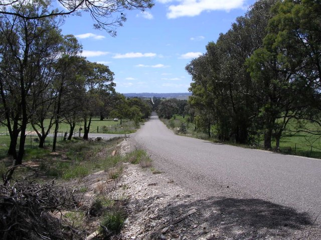
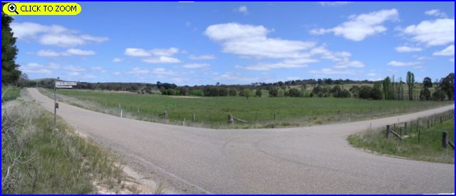
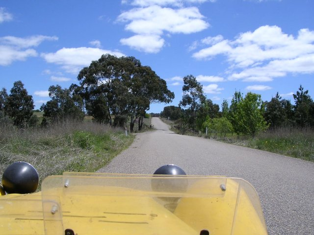
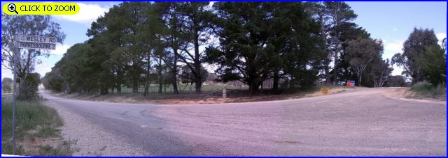
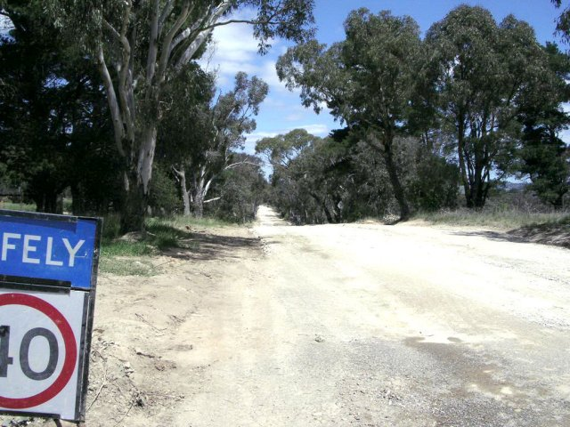
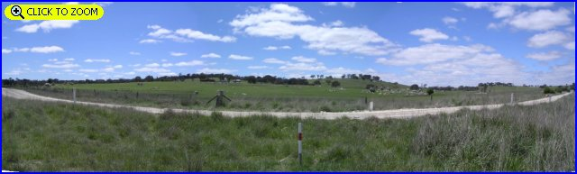

Numbers on the map represent the location where the photographs were taken. Scroll down to view the photographs.
Parkesbourne - Photographs #7 to #12
|| Contents || Photo's 1-6 | Photo's 7-12 || Home ||
Numbers on the map represent the location where the photographs were taken. Scroll
down to view the photographs.
Return to racingcircuits.net's Photo Archive Main Index

7 - The straight leading up to the corner at Walkoms Bridge.

8 - 3km to the next corner [Click here to Zoom In]

9 - Walkoms Bridge. From here to the next corner, it's a roller coaster
road of crests and dips.

10 - Wesley Road, 2km to Parksbourne. [Click here to Zoom In]

11 - Here, work is been carried out prior to sealing the surface.

12 - Sequence of curves at Parksbourne [Click here to Zoom In]
Photographs and Text ©Neil Fackerell. Reproduced here with kind permission.